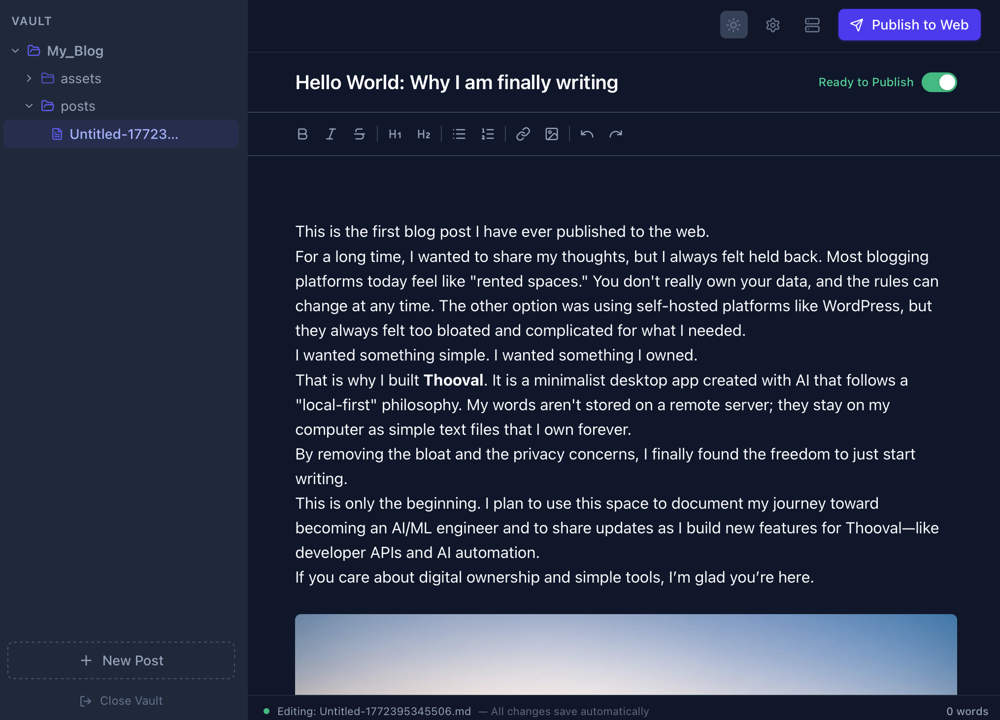

Typora-like writing feel
Live WYSIWYG Markdown so the writing experience feels clean, direct, and less like editing source code.
Thooval gives you a Typora-like Markdown editor with a real publish button. Write locally, keep your posts as plain .md files, and push straight to GitHub Pages without Jekyll, CI pipelines, or CMS overhead.
Live WYSIWYG Markdown, local drafts, calm interface, no browser tab chaos.
Connect GitHub once, then write and publish from the same place.

Great writing apps usually stop at the draft. Great publishing stacks usually feel like infrastructure. Thooval sits in the middle.
Every post stays as plain Markdown on your Mac.
Your published blog lives on GitHub Pages, not inside someone else's platform.
No Ruby setup, no build pipeline babysitting, no monthly hosting tool bill.
Typora, iA Writer, and Obsidian are great places to write. Jekyll, Ghost, and WordPress are ways to publish. The awkward part is having to stitch those worlds together every time you want to ship a post.
Thooval is not trying to be a note-taking app, a visual website builder, or a giant publishing platform. It is a Mac app for people who want a straightforward GitHub Pages blog.
Live WYSIWYG Markdown so the writing experience feels clean, direct, and less like editing source code.
Generate and push the site from the app instead of wiring together a separate terminal workflow.
Your posts remain plain .md files in folders you control, which means no lock-in to a hosted database.
Google Analytics and Giscus support are part of the product so you do not need a plugin maze for basics.
If you are comparing editors, looking for a GitHub Pages workflow, or just trying to understand whether this is a fit, these are the best entry points.
Start with the product page that shows the setup model and the publishing flow.
Open the GitHub Pages use caseStart with the most natural alternative page if you already love the writing experience and want a publish path.
Read the Typora comparisonStart with the setup and comparison guides if you want to evaluate the stack before buying anything.
Browse the guidesYou already like the idea of a repo-backed blog and want the easiest path to maintain it.
You do not want to draft in a clunky CMS editor just to get a post online.
You want a small, durable workflow that keeps ownership of both files and published site.